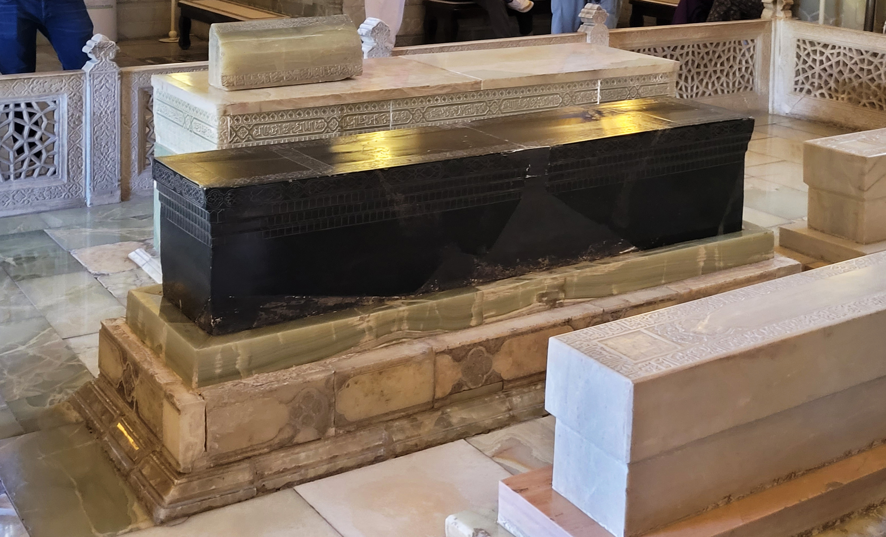

Mustaqillik davrida Amir Temur merosining tiklanishi (1991–1996)
Mustaqillikdan soʻng Oʻzbekiston Amir Temurni milliy qahramon sifatida ulugʻlay boshladi. Quyida Toshkentdagi Amir Temur haykalining ochilishi (1994), Temuriylar tarixi davlat muzeyi (1996), 1996-yilgi 660 yillik va boshqa dalillar aniq sanalar bilan, faqat tasdiqlangan manbalar asosida bayon etiladi.

1991-yilda mustaqillikka erishgach, Oʻzbekiston oʻtmishdagi tarixiy shaxslar va madaniy merosni qayta ulugʻlashga kirishdi. Bu jarayonda eng markaziy oʻrinni Amir Temur egalladi: u sovet davri ramzlari oʻrniga davlatning asosiy milliy qahramoni sifatida taqdim etildi. Quyida bu jarayonning asosiy dalillari — haykal, muzey, yubiley va davlat mukofoti — aniq sanalar bilan, faqat tasdiqlangan manbalar asosida bayon etiladi.
Amir Temur kim edi
Amir Temur (Temur, gʻarbda Tamerlan nomi bilan mashhur, 1336–1405) — Temuriylar saltanatiga asos solgan sarkarda va davlat arbobi. U 1336-yilda Shahrisabz (Kesh) yaqinida tugʻilgan va 1405-yil 19-fevralda Oʻtror yaqinida vafot etgan. Uning saltanati poytaxti Samarqand boʻlib, shahar oʻsha davrda yirik ilm, meʼmorlik va savdo markaziga aylangan. Temurning qabri Samarqanddagi Goʻri Amir maqbarasida joylashgan.
Milliy ramz sifatida tanlanishi
Mustaqillikdan keyin birinchi prezident Islom Karimov Amir Temurni milliy qahramon va davlatchilik ramzi sifatida ilgari surdi — bu sovet davri qahramonlari oʻrnini egalladi va 'xalqning maʼnaviy hamda madaniy merosini tiklash' siyosatining bir qismi boʻldi. Ilmiy adabiyotda bu jarayon mustaqillikdan keyingi 'davlat qurilishi' (nation-building) namunasi sifatida tahlil qilinadi.
Toshkentdagi Amir Temur haykali (1994)
Toshkentning markaziy maydonidagi Amir Temurning otdagi bronza haykali 1994-yil 31-avgustda — Mustaqillik kunining uchinchi yilligi arafasida ochildi; shu bilan birga maydon Amir Temur xiyoboni deb nomlandi. Haykal mualliflari — aka-uka Kamol va Ilhom Jabborovlar. Haykalga Temurga nisbat beriladigan 'Kuch — adolatda' shiori bitilgan.
Maydonning oʻtmishi
Amir Temur haykali turgan maydonda turli davrlarda boshqa yodgorliklar boʻlgan: 1913-yilda general-gubernator Konstantin fon Kaufman yodgorligi, keyinroq Stalin haykali, soʻngra 1968-yilda oʻrnatilgan Karl Marks haykali. Marks haykali mustaqillikdan keyin olib tashlanib, oʻrniga Amir Temur haykali qoʻyildi. Shu tariqa maydon sovet davri ramzlaridan milliy ramzga oʻtishning koʻzga koʻrinarli timsoliga aylandi.
Temuriylar tarixi davlat muzeyi (1996)
Toshkent markazida Amir Temur va Temuriylar sulolasiga bagʻishlangan Temuriylar tarixi davlat muzeyi 1996-yil 18-oktabrda ochildi. Gumbazli bino 660 yillik yubiley bilan bogʻliq ravishda, Karimov tashabbusi bilan barpo etildi va minglab eksponatlarni oʻzida jamladi.
660 yillik: 1996-yil
Prezident farmoni bilan 1996-yil 'Amir Temur yili' deb eʼlon qilindi va Temur tavalludining 660 yilligi butun Oʻzbekistonda keng nishonlandi. Yubiley doirasida Parijdagi YUNESKO qarorgohida 'Amir Temur haftaligi' — ilmiy anjumanlar va koʻrgazmalar oʻtkazildi.
Amir Temur ordeni
1996-yilda — 660 yillik yubiley yilida — Amir Temur ordeni davlat mukofoti sifatida taʼsis etildi. Bu orden Oʻzbekistonning oliy davlat mukofotlaridan biri hisoblanadi. Shu bilan birga, mamlakatning koʻplab maydon va koʻchalari Amir Temur nomi bilan atala boshladi.
Merosning joydagi aksi
Amir Temur merosining tiklanishi faqat ramzlar bilan cheklanmadi: Samarqanddagi Goʻri Amir maqbarasi kabi temuriylar davriga oid meʼmoriy yodgorliklar taʼmirlandi va muhofazaga olindi. Bu yodgorliklar bugungi kunda Oʻzbekistonning tarixiy merosi va turizmining muhim qismidir.
Manbalar
- Encyclopaedia Britannica — Timur (1336–1405), Timurid Empire, capital Samarkand
- uzbekistan.travel (official tourism) — Amir Temur Square, statue unveiled 1994, motto 'Strength is in Justice'
- Wikipedia — Amir Timur Square (statue 31 Aug 1994; Kaufman/Stalin/Marx statues) and Amir Timur Museum (1996, nation-building; cites Cummings 2013)
- OrexCA — State Museum of the History of the Temurids, Tashkent (opened 18 October 1996)